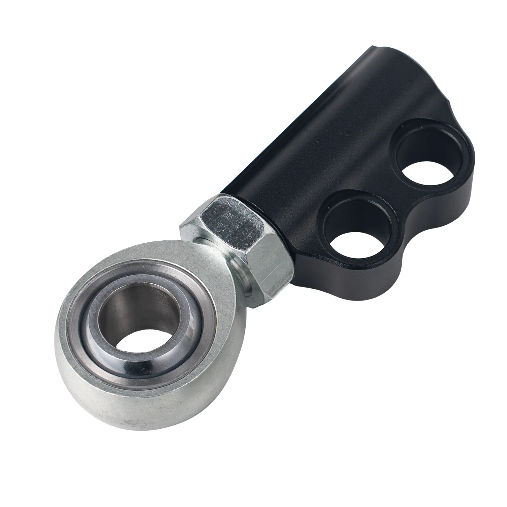

1 / 8Replacement lollipop and Inner Joint Stud Do BMW E36 Left And Right PP006210
Zastosowanie: Zamiennik zestawu szerokokątnego przedniego wahacza kierownicy FAPO dolnego wahacza do BMW E36 Zawartość zestawu: 1 x para lizaków do zestawu Fapo E36 1 x para wewnętrznych kołków przegubowych
Application: Replacement for FAPO Front Steering Drift Lower Control Arm Wide Angle Kit for BMW E36 Package Includes: 1 x Pair Lollipop for Fapo E36 Kit 1 x Pair of Inner Joint Stud
515 PLN
Opis produktu
Zastosowanie:
- Zamiennik zestawu szerokokątnego przedniego wahacza kierownicy FAPO dolnego wahacza do BMW E36
Zawartość zestawu:
- 1 x para lizaków do zestawu Fapo E36
- 1 x para wewnętrznych kołków przegubowych
Application:
- Replacement for FAPO Front Steering Drift Lower Control Arm Wide Angle Kit for BMW E36
Package Includes:
- 1 x Pair Lollipop for Fapo E36 Kit
- 1 x Pair of Inner Joint Stud
FAPO Polska
Ten produkt obsługujemy lokalnie
Autoryzowana obsługa
FAPO Polska prowadzi katalog, kontakt i zamówienia bez odsyłania klienta do zewnętrznych sklepów.
Dobór po aucie
Sprawdzamy dopasowanie produktu do pojazdu, rocznika i wersji przed finalizacją zamówienia.
Wsparcie po zakupie
Masz kontakt w Polsce w sprawach zamówień, wysyłki, gwarancji i zwrotów.